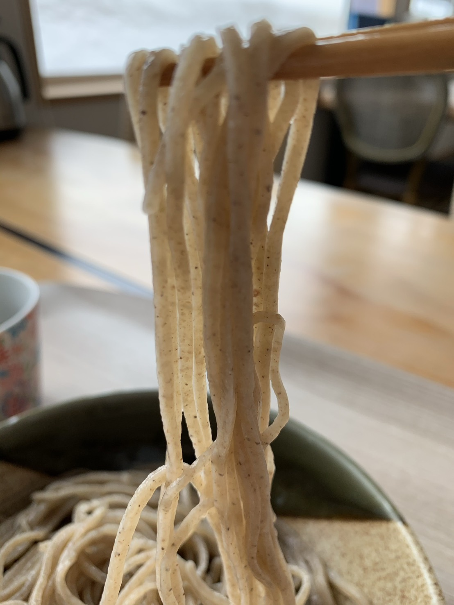
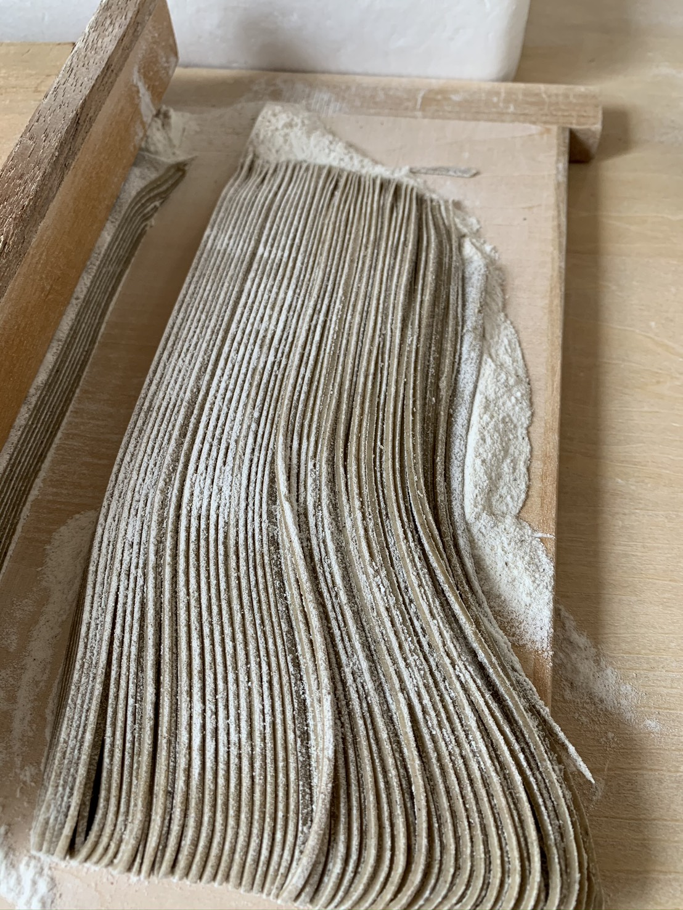
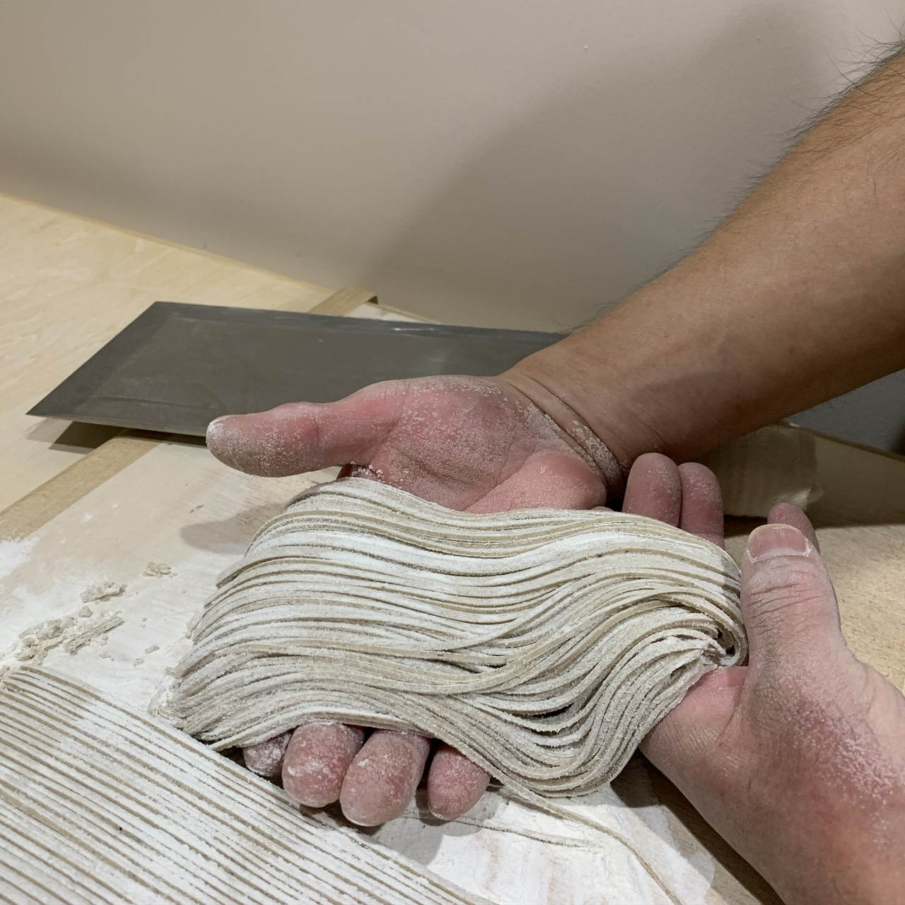
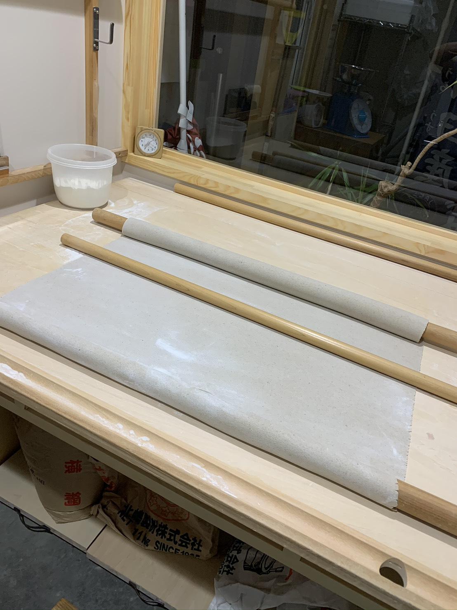
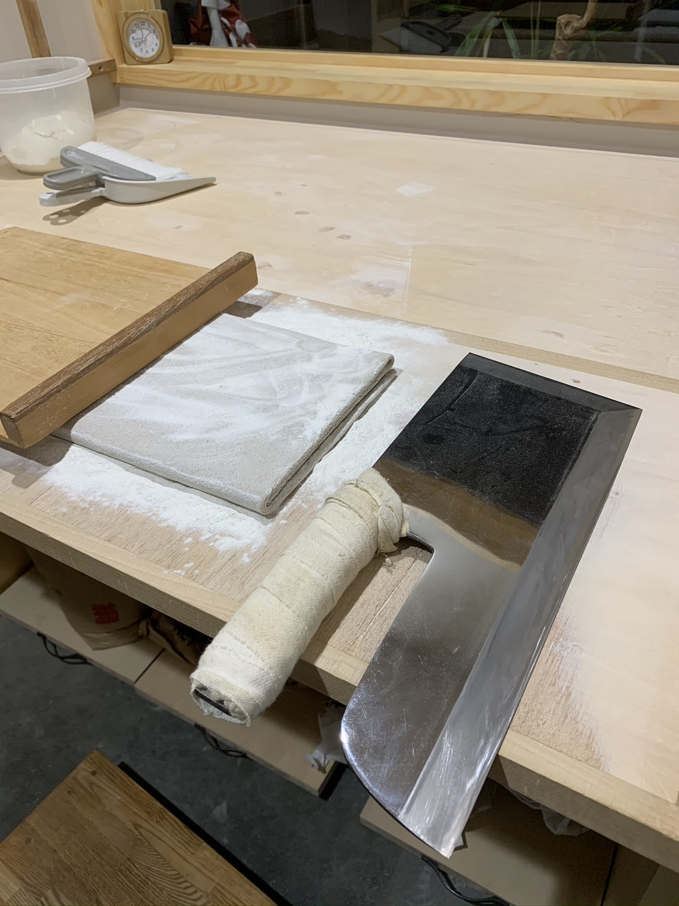

KODAWARI
幻庵のこだわり
そば本来の香りと、
粗挽きならではの食感を大切に。
素材の持ち味を引き出すため、そば粉の選定から加水、手打ちの工程まで、 一つひとつ丁寧に向き合っています。


石臼粗挽きのこだわり
粗挽きだからこそ味わえる、香りと食感。
幻庵では、粗挽き粉ならではのざらりとした食感と、そば本来の香り・甘みを大切にしています。
石臼でゆっくりと挽くことで、そばの風味を引き出し、噛むほどに広がる素朴な味わいをお楽しみいただけます。
手打ちのこだわり
日々の気温と湿度を見極める、手打ちの技。
粗挽きのそば粉は粒子が粗く、扱いが難しい素材です。
その日の気温や湿度によって、必要な加水量は変わります。幻庵では、日々の状態を見極めながら、そば粉に合わせて丁寧に加水し、手打ちで仕上げています。
同じそば粉でも、毎日同じようには打てないからこそ、職人の経験と感覚を大切にしています。



北海道浦臼産そば粉「牡丹」
幻庵では、北海道浦臼産のそば粉「牡丹」を使用しています。
「牡丹」は生産量が少なく、安定して仕入れることが難しい希少価値のある品種です。北海道内でも使用している店舗は多くありません。
また、幻庵はJAから認定を受けた蕎麦店として、北海道産そば粉の風味を大切にした一杯をお届けしています。

鴨せいろのこだわり
滝川産鴨モモ肉を使った、幻庵おすすめの一品。
幻庵の鴨せいろは、滝川産の鴨モモ肉を使用しています。 鴨ロースを使うお店が多い中、幻庵ではモモ肉ならではの柔らかさと旨みを大切にしています。
滝川産鴨モモ肉ならではの柔らかさ
鴨の甘みが溶け込む、深みのあるそば汁
クセが少なく、初めての方にも食べやすい一品
もり汁とかけ汁を合わせたそば汁に、鴨モモ肉から出る甘みが溶け込みます。 鴨肉が苦手な方にもおすすめしやすい、幻庵の人気メニューです。